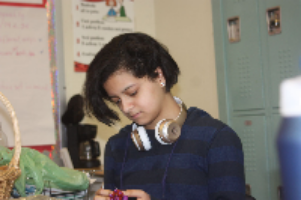

|  | SchoolWilliamsburg High School For Arts and Tech |
Skills:I am a quick learner. I have experience in HTML, CSS, Javascript, and Jquery. |
|---|
I am a good scholar and have been Valedictorian twice. I took Software Engineering (year one and two).
Im currently doing college classes with LIU and Medgar Evars. I'm also a Student Ambassador, and doing Advanced CodeNation classes. I also own my own business
As much as I love coding, my real passion is animals. I would like to become a veterinarian. I want to work at a clinic for several years, before opening up my own Wildlife Rescue Conservation. Knowing programming will be a good asset to being able to run a company.